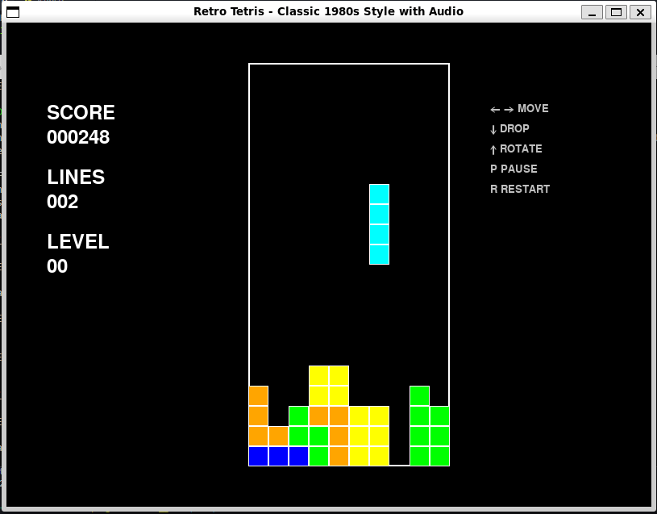

Tetris has always been one of my favorite games, the fascination began when I was just a kid. I have always been drawn to blocks and puzzles. My first encounter with it was through my cousin's Game Boy - a device I quickly became obsessed with and wanted one of my own.
🎮 RETRO TETRIS
Classic 1980s Arcade Experience
🎬 Gameplay Demo
Watch the classic Tetris gameplay (visual demo only)

Authentic 1980s arcade styling with smooth gameplay
🎯 Why Tetris?
🎯 Game Features
Authentic 1980s Style
Classic color palette, retro typography, and smooth 60 FPS gameplay
Universal Audio System
Background music with cross-platform compatibility
Classic Gameplay
7 Tetris pieces, line clearing, progressive difficulty, and pause functionality
Cross-Platform
Works on Windows, macOS, and Linux with automatic audio fallbacks
🎮 Game Controls
← →
Move piece left/right
↓
Soft drop (faster fall)
↑
Rotate piece
P
Pause/Resume game
R
Restart (when game over)
ESC
Quit game
🤖 This Game was Built Using Amazon Q CLI
- My approach involves experimenting with AI to craft effective prompts. The prompt I used was, "As a lover of retro games, create me a retro Tetris game that resembles the original game. I want different shapes to fall from the top of the rectangular screen. Players can move the pieces left and right, rotate them, and drop them fast. Once the shapes create a horizontal line without gaps, that line will disappear, and any blocks above it will drop down. Points are earned when a line clears out and when the user choose to drop them fast."
- This AI demonstrated a deep understanding of Tetris's core mechanics. It generated the code and conducted automated testing to identify and minimize bugs which was impressive and saved me so much time. It even recommended other features for the game that I didn't mention in my prompt.
- It tackled classic programming challenges by learning data patterns and their relationship to create a resolution versus making a guess about what the issue is.
🚀 Get Started
⚡ Quick Installation
Terminal
# Clone the repository
git clone https://github.com/username/retro-tetris.git
cd retro-tetris
# Install dependencies
pip install pygame
# Run the game
python retro_tetris_main.py🔧 System Requirements
Python: 3.6 or higher
Pygame: 2.0 or higher
OS: Windows, macOS, or Linux
Memory: 50MB RAM
Storage: 10MB disk space